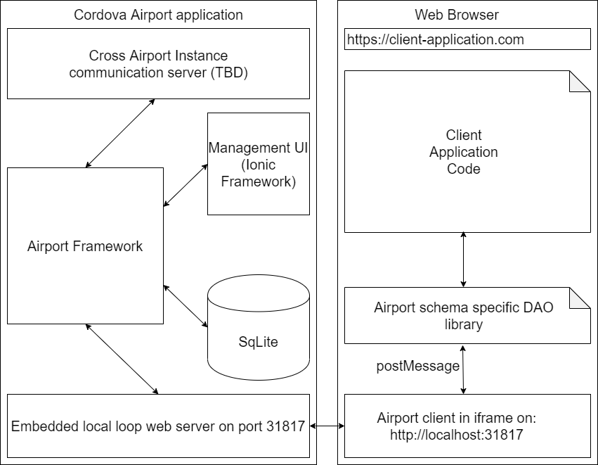

Airport in Cordova
Initial designs behind Airport called for an all-in-browser framework. However after I did enough research this proved to be impractical for the following reasons:
- WebSql is deprecated and may be removed in the future
- Amount of allowed localStorage is severely limited, even if there is plenty of disk space
- Registry of servers would have to be centralized or maintained in separate processes
While I still had hopes of running Airport in browser (at least in some corner cases), eventually I can to a realization that a separate process would be needed to run the Airport framework. However by then the bulk of the logic has already been written in TypeScript. So the natural choice for running Airport was a Node.js process. But Node.js does not run (at least not well) on mobile platforms and the only other platform I am aware of that runs on mobile and executes Javascript is Apache Cordova. That solved all of the issues listed above and allowed to use other 3rd party frameworks for yet to be implemented features.
Here is what a proposed component layout for a typical Airport installation is:
Cordova Side
The Cordova process will contain several internal components:
- A component that communicates with other Airport servers (yet to be determined)
- The core Airport framework running directly in WebView
- A management client (showing lists of repositories, applications, users, etc.) written in Ionic Framework (to look native)
- A SqLite process (where all of the data is persisted)
- A Web server, running on localhost only, used to communicate to local applications
For security reasons, it is important to run the Web server that communicates with local applications on localhost only. This is allows for easier verification of actions by client applications. This guarantees that it is the user of the device (or a malicious script running locally) that is requesting access to the Airport database. All that is left to is prompt them with a Captcha and verify that indeed the user is performing the requested action.
Browser Side
On the browser side Airport runs inside an iframe and communicates both with the the localhost that it runs from and with the host application. It does does the communication with postMessage and does all necessary serialization of object graphs before sending them to local web server (and deserialization before passing them back to client application).
The application only needs to run a small stub library that passes query query parameters and object graphs (for persistence) to Airport and receive object graphs back.